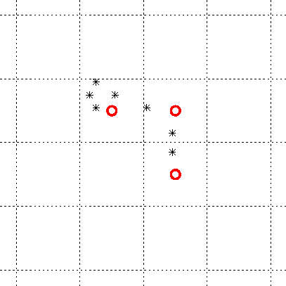
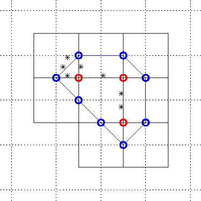

Nächste Seite: Deformiertes Gitter Aufwärts: A grid to march Vorherige Seite: Exkurs: Inhalt
Die Triangulierungsliste ist mit der Liste der Oberflächenpunkte ausreichend, die MC-Oberfläche darzustellen. Um zwischen benachbarten Dreiecken auch mit Lichtberechnung glatte Übergänge zu erhalten ist die Liste der Normalen notwendig. Diese eignet sich aber auch, die Oberfläche runder zu machen. Siehe dazu Kapitel 4.4.
Abb. 4.4, 4.5 und 4.6 veranschaulichen nochmal in 2D die Vorgehensweise.
|
 |
|
 |
Leo Wandersleb 2005-01-17